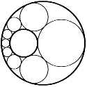
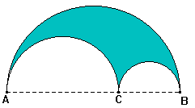

|
|
 |
El
porismo de Steiner (11 páginas) |
| |
Consideremos
dos circunferencias, no concéntricas y una interior a la otra.
Comenzamos por inscribir una circunferencia entre ambas, y luego vamos
inscribiendo circunferencias tangentes a las dos dadas y a la última.
Llegará un momento en que la circunferencia que inscribimos
se solape con la primera, o bien que sea tangente a ella.
El porismo de Steiner afirma que ello no depende
de la posición de la primera circunferencia inscrita.
Se demuestra fácilmente con ayuda de la
inversión.
|
|
El
árbelos (47 páginas) |
| |
El
árbelos es la figura que se obtiene al quitar al semicírculo
con diámetro AB los semicírculos con diámetros
AC y CB, siendo C un punto intermedio de AB.
Esta figura tiene numerosísimas propiedades.
Puedes ver algunas en la página dedicada al árbelos
en Bella Geometría.
|
|
Cuadrados
mágicos (42 páginas) |
| |
|
16
|
3
|
2
|
13
|
|
5
|
10
|
11
|
8
|
|
9
|
6
|
7
|
12
|
|
4
|
15
|
14
|
1
|
Un cuadrado mágico 4x4 es un cuadrado con
los números del 1 al 16, de manera que las horizontales,
las verticales y las dos diagonales suman lo mismo, en este caso,
34. Es famoso el este cuadrado mágico, al aparecer en el
grabado Melancolía I de Alberto Durero.
|
|